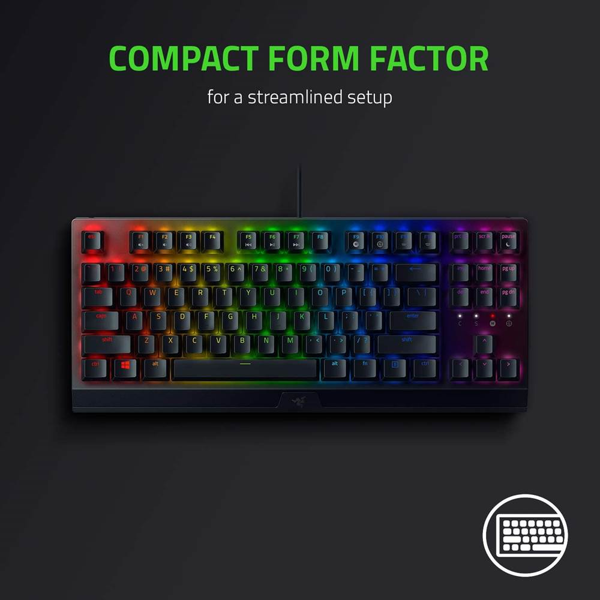
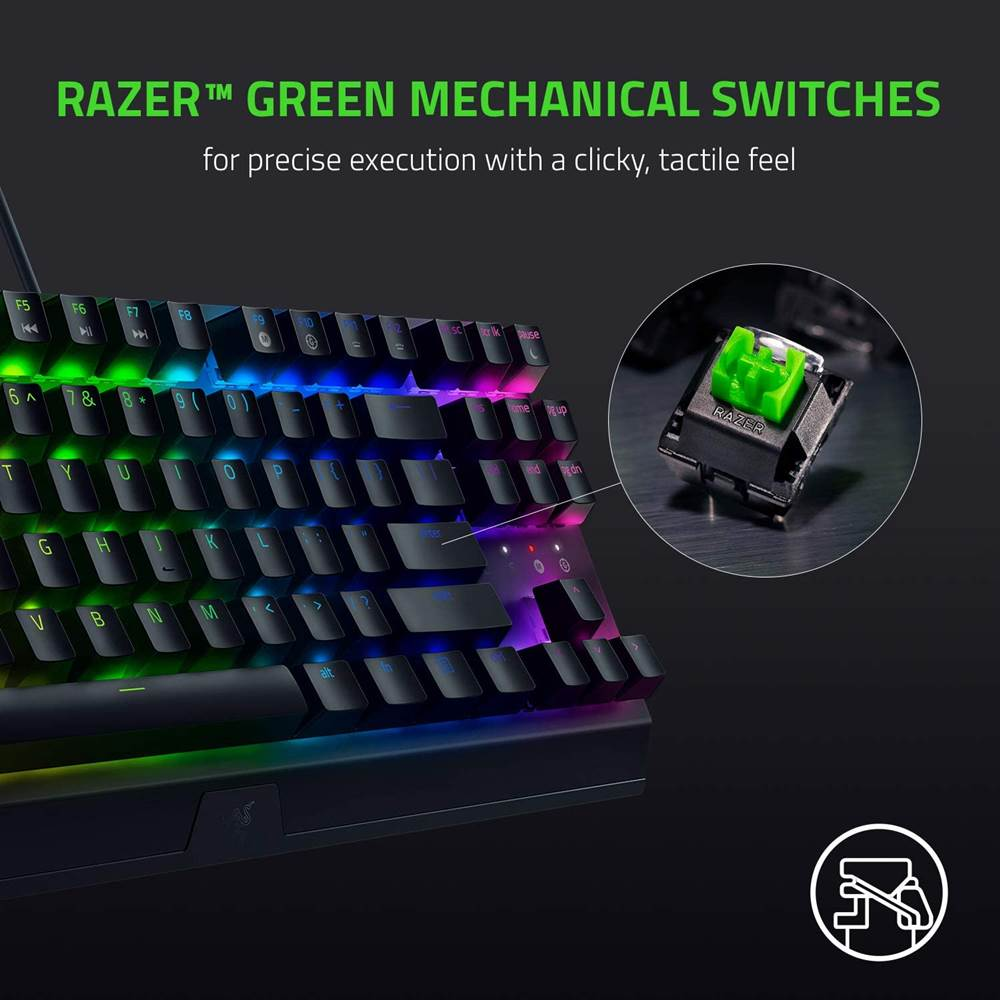

Tên sản phẩm: Bàn phím Razer Blackwidow V3 TKL Yellow Switch
Switch Switch Razer Yellow
Kích thước: TKL (87 Phím)
Đèn nền: Razer Chroma với 16,8 triệu màu có thể tùy chỉnh
Keycaps: ABS
Chế độ kết nối USB Có
Tuổi thọ phím: 80 triệu lần nhấn phím
Trọng lượng bàn phím: 840g
Mô tả
Cảm nhận sự khác biệt
Hiệu suất năng động ở dạng gọn gàng hơn với Bàn phím Razer Blackwidow
V3 TKL Yellow Switch. Tiếp tục là một sản phẩm mang đến sự đặc trưng biểu tượng của Razer,
bàn phím cơ gaming nhỏ gọn này được trang bị Switch Razer nổi tiếng thế giới của Razer.
Ngoài ra, bàn phím cơ này còn sở hữu Razer Chroma RGB, cho mức độ chính xác cao nhất và cá
nhân hóa trải nghiệm của bạn

Sở hữu bộ Switch chất lượng và đèn RGB 16,8 triệu màu
Bàn phím Razer Blackwidow V3 TKL Yellow Switch còn sở hữu bàn phím với Switch Razer
Yellow,
tạo cho người dung cảm giác nhẹ tay và tiếng clicky vô cùng đã tai. Chính điều này sẽ giúp cho
trải nghiệm của bạn với chiếc bàn phím sẽ mượt mà hơn mà không gặp phải các vấn đề như việc cứng
đầu ngón tay khi gõ hay đau đầu ngón tay vì phải dùng lực quá mạnh

Bộ đèn nền LED RGB 16,8 triệu màu
Được cung cấp bởi Razer Chroma RGB, với ánh sang LED có thể tùy chỉnh,
căn phòng, không gian chơi game của bạn sẽ trở nên tuyệt vời hơn bao giờ hết. Ngay
cả khi bạn dùng bàn phím ở điều kiện phòng sáng, ánh sáng LED RGB của Bàn phím Razer
Blackwidow V3 TKL Yellow Switch cũng sẽ không làm bạn thất vọng.
Cấu tạo vỏ bàn phím bằng nhôm đủ dày để bạn có thể sử dụng thường xuyên trong nhiều giờ liền,
cùng với lớp chống làm mờ hoàn thiện
 Trang chủ
Sản Phẩm
Bảo hành
Đăng nhập
Trang chủ
Sản Phẩm
Bảo hành
Đăng nhập